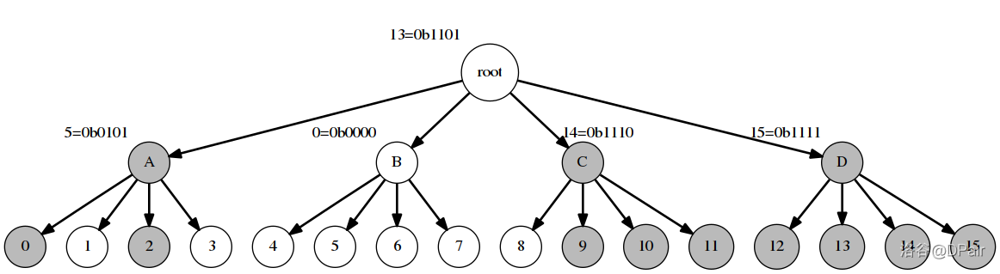

压位 Trie 学习笔记
0 前言
本文学习自 @skip2004 的集训队论文 《浅谈亚 log 数据结构在 OI 中的应用》。本文将按论文顺序介绍笔者的个人理解和思考。
由于本人更侧重于 OI 中的 广泛应用，所以只考虑 简单实现 ，过于毒瘤或卡常的实现不 作（感谢@Jacderzhang）考虑。
1 Dynamic Predecessor Problem
论文的这一部分主要介绍了 Dynamic Predecessor Problem 是一个怎样的东西，实际上就是 加点删点然后求前驱后继 。论文里另外讲了几种常见的解法，都比较简单在此不赘述。
2 压位 trie
2-0 前言
Jacderzhang：“这东西不是很简单吗？去年冬令营wys都讲过。”
DPair：“去年冬令营啊，我只记得‘CCF实行三M原则’了……”
2-1 简介
压位 Trie，顾名思义，就是压位的 Trie 树，对于这道题我们显然要对值域开 Trie。
我们发现一般用来处理问题的 Trie 树都是按当前位的 $0/1$ 来分类的，最终一次的复杂度是 $O(\log_2 V)$ 的。
这不太行，我们考虑用压位的思想处理这个问题。
那既然你一个结点两个儿子不够，那么我开 $w$ 个儿子，树的深度就降低了，就可以在 $O(\log_w V)$ 的时间内处理问题了。
借用一张论文里面的图，应该可以帮助理解。

上图事实上维护了一个值域为 $[0, 2^4)$ 的问题，取 $w=4$ ，所以总层数为 $\log_42^4=2$ 。每一个结点维护的是自己的子树中 有哪几个有值 。例如图中维护的数字集合就是 ${0, 2, 9, 10, 11, 12, 13, 14, 15}$ ，所有有数的点为深色。
至于为什么 ￥gg 的论文里面 root 没有标深色，我也不知道，但按我个人的理解是要标的。可能是没必要标（毕竟你这个数集里面有没有元素全局维护即可）。
并且，这里我们也可以初步看出，对于一个压位 Trie ，我们一方面不能动态开点（不然要记录儿子）。
2-2 操作处理
回归正题，不难发现我们可以把这棵树看做一棵 leafytree ，当然也可以理解成线段树。这对我们处理修改和询问有一定的帮助。
注：接下来我们认为值域是 $2^k$ 即卡满，至于为什么这么写。。。这是因为 DPair 写挂了一个地方然后不想改了（（
2-2-1 插入
首先我们考虑插入操作，不难发现我们和普通 Trie 的插入方式一致是可以做到的。考虑从根结点开始，往我们插入的方向一直走，沿途打标记即可。复杂度 $O(\log_w 2^k)$ 。
2-2-2 删除
与插入同理，最后把空的子树标记清除一下即可，同样也是沿途修改。复杂度 $O(\log_w 2^k)$ 。
2-2-3 前驱后继
这两个没有本质区别，故并举，下面只讨论前驱。
首先我们显然要从根开始往下搜，那么对于在一可子树内找 $x$ 的前驱，我们分两类处理：
- 这一位就已经 $< x$ ，那么直接在左边最大的子树中查找最大值即可，显然最优。复杂度 $O(\log_w 2^k)$。
- 这一位 $=x$ ，这一部分需要考虑 $x$ 在自己所对应的子树内有没有前驱，如果有的话显然更优。
所以我们先搜索 $2$ 情况，不合法再搜 $1$ 情况。
咋看之下这东西是 $O(\log_w^22^k)$ 的。
事实上，不难发现我们可以 $O(1)$ 判断 $1$ 情况是否有解，故 $1$ 情况最多被执行一次，最终复杂度还是 $O(\log_w2^k)$ 的。
用 unsigned long long 压位可以压到 $w=64$ 。
2-3 关于空间复杂度
假设树的大小为 $2^k$ 。由于不能动态开点，朴素实现的话空间和线段树类似是 $O(2^k)$ ，但这对于像我一样的毒瘤出题人们来说过于 naive。不过其实也不难发现这东西的空间优化方式和线段树类似，压位 Trie 的最后一层有 $2^k$ 个结点，但本质上什么都没有记录，所以可以直接优化掉，最终为 $O({2^k\over w})$ 。
2-4 一些优化
￥gg 论文里面说这部分是压位 Trie 的实现，单个人觉得像是在写优化，所以直接当优化去理解了。
首先我们采取分层维护的方式，每一层开一个对应大小的数组来进行维护，可以尽可能压缩空间。
2-4-1 插入
然后不难发现，每一个值在每一层对应的位置都可以非常方便地求出，故插入时考虑自下而上遍历。如果已经插入过的话就可以直接弹出，达到剪枝的效果。
2-4-2 删除
删除同理，如果某一个结点删完之后还有数，那么就可以不继续向上走而直接跳出了。
而且不难发现如果自上而下的话，删除需要上下行两趟操作，现在只需要一趟。
2-4-3 前驱后继
我们还是只讨论前驱。
不难发现，我们自下而上的话，就是从当前的 $x$ 开始，如果其左侧存在结点，那么就可以直接对应找最大值了，也减少了常数。
这些剪枝已经足够了，而且实现上并不困难。
2-5 代码实现
基本完全搬的 @skip2004 的，因为实现的真的太好了我感觉改哪里都亏（（
实现了 这道题。
点此展开代码
#include <cstdio>
namespace BITWISE{
inline int clz(unsigned long long x){return __builtin_clzll(x);}//这个函数是查询开头几个零
inline int ctz(unsigned long long x){return __builtin_ctzll(x);}//这个函数是查询末尾几个零
} // namespace BITWISE
using namespace BITWISE;
namespace GenHelper{
unsigned z3, z4, b;
inline unsigned rand_(){
z3 = ((z3 & 4294967280U) << 7) ^ ((z3 << 13) ^ z3) >> 21;
z4 = ((z4 & 4294967168U) << 13) ^ ((z4 << 3) ^ z4) >> 12;
return (z3 ^ z4);
}
}
inline void srand_(unsigned x){
using namespace GenHelper;
z3 = x ^ 0x1234598766U;
z4 = (~x) + 51;
}
typedef unsigned long long ull;
const int g = 6;
const int mod = (1 << g) - 1;
ull BUFF[1 << 25], *BT = BUFF + sizeof(BUFF) / sizeof(ull);//预先开好内存池
inline ull *alloc(int sz){return BT -= sz;}//动态分配空间
struct Trie{
int dep;ull *a[5];//动态数组
Trie(int sz){//初始化
dep = 1;
for(;;++ dep){
int cnt = (sz + (1ull << g * dep) - 1) >> g * dep;//表示这一层有多少个点
a[dep - 1] = alloc(cnt);
if(cnt == 1) return ;
}
//注意这里层数越小越深，这样方便我们位运算
}
inline void ins(int x){
for (int i = 0;i < dep;++ i){//自下而上遍历的
ull p = 1ull << (x >> i * g & mod); //判断我们这个 x 在当前这一层要走哪一条边，并且直接左移好方便压位的处理
if(a[i][x >> (i + 1) * g] & p) return ;//剪枝，上面有就可以弹出了
a[i][x >> (i + 1) * g] |= p;
}
}
inline void del(int x){
for (int i = 0;i < dep;++ i)
if(a[i][x >> (i + 1) * g] &= ~(1ull << (x >> i * g & mod))) return ;//删除一个位置，同样是删完还有就不删了的剪枝
}
inline int succ(int x){
for (int i = 0;i < dep;++ i){
int cur = (x >> i * g) & mod;ull v = a[i][x >> (i + 1) * g];//当前是哪一条边，由于这里只需要知道是哪一条边所以我们不需要左移
if(v >> cur > 1){//如果存在前驱，也可以写成 v >> (cur + 1)，后者更好理解但前者似乎更快
int res = x >> (i + 1) * g << (i + 1) * g;
res += (ctz(v >> (cur + 1)) + cur + 1) << i * g;//先把这一层的贡献加上，注意是不完整的
for (int j = i - 1;~j;-- j) res += ctz(a[j][res >> (j + 1) * g]) << j * g;//剩下每一层都是完整的
return res;//直接返回
}
}
return 0;//否则返回零
}
inline int pre(int x){//与上面同理，不赘述
for (int i = 0;i < dep;++ i){
int cur = (x >> i * g) & mod;ull v = a[i][x >> (i + 1) * g];
if(v & ((1ull << cur) - 1)){
int res = x >> (i + 1) * g << (i + 1) * g;
res += (mod - clz(v & ((1ull << cur) - 1))) << i * g;
for (int j = i - 1;~j;-- j) res += (mod - clz(a[j][res >> (j + 1) * g])) << j * g;
return res;
}
}
return 0;
}
};
int ans;
Trie s(1 << 30);
inline void work(){
int x = GenHelper :: rand_() & ((1 << 30) - 1), op = (x >> 15) & 3;
/* Your code begins here */
if(op == 0) s.ins(x);
else if(op == 1) s.del(x);
else if(op == 2) ans ^= s.pre(x);
else ans ^= s.succ(x);
}
int n, seed;
int main(){
scanf("%d%d", &n, &seed);
srand_(seed);
while(n --) work();
printf("%d\n", ans);
}
3 个人总结
这个数据结构似乎都基于值域，而且似乎使用起来有比较大的限制，所以感觉在我目前能够涉及到的 OI 范围中不太能用上，比如论文里面给出的 [ZJOI2019] 语言 这一例子，我们完全可以使用线段树合并来进行直接处理，代码难度更低的同时同样可以通过这道题。故个人感觉除了卡常需要，这个数据结构一般不太会用上。不过这个思想还是很值得学习的。